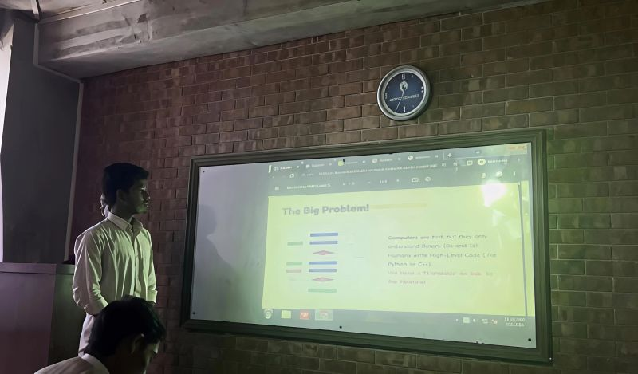

Recently, I had the opportunity to present in my CSE course on the topic of why computers need translators and the differences between the main types of translators: compiler, interpreter, and assembler.
I was quite nervous before presenting, but I overcame my fear and completed it successfully. It turned out to be a wonderful learning experience that helped me become more confident.
Every presentation is another step toward improving my communication skills and becoming more confident in sharing my knowledge.
